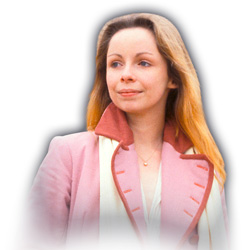

Romana
Romana, short for Romanadvoratrelundar, is a fictional character in the long-running British science fiction television series Doctor Who. A Time Lord from the planet Gallifrey, she is a companion to the Fourth Doctor.
As a Time Lord,[1] Romana is able to regenerate, having had two on-screen incarnations with somewhat different personalities (dubbed Romana I and Romana II by fans). Romana I was played by Mary Tamm from 1978 to 1979. When Tamm chose not to sign on for a second season, the part was recast. Romana II was played by Lalla Ward from 1979 to 1981. A third incarnation of Romana has been depicted in some of the spin-off novels, and a fourth (performed by Juliet Landau) has been featured in several audio dramas released by Big Finish Productions in 2013 and 2014, and will appear again in early 2015.
Romana is one of only two members of the Doctor's own race to travel with him in the original television series. The other is Susan Foreman, the Doctor's granddaughter, though Susan was never actually referred to as a Time Lord.
|